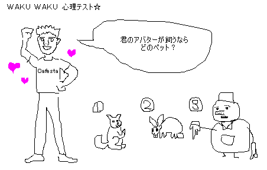

今回のテーマは「あなたのアバター性格」です。
①の「犬」を選んだあなたは、少し寂しがりや。
無意識に足跡をつけすぎて、とんだ来客に驚くこともしばしば。
気に入った相手のところだけに行くように努力すれば、相手の拒否リストに。
②の「うさぎ」を選んだあなたは、キュートな魅力で異性にモテモテ。
チャットルームを開けば千客万来、新しい服が出れば翌日にはプレゼントされる暮らし。
同性から妬まれます。
③の「雪だるま」を選んだあなたは、リーダー的存在。サークルを立ち上げちゃう兄貴肌。
兄貴すぎてサブちゃんでいっぱい。